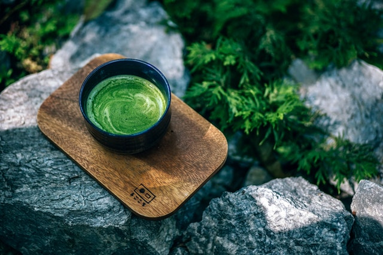
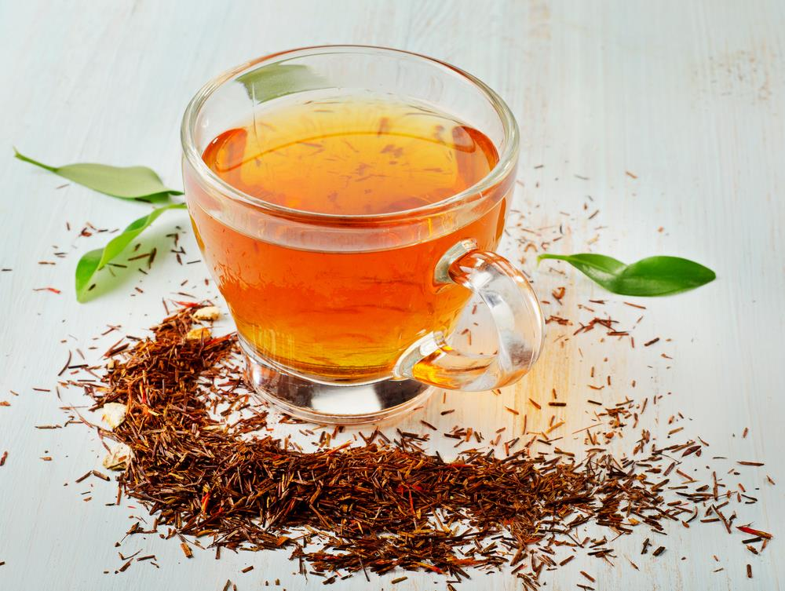

Matcha
The namesake of this website, Matcha is green tea processed into a fine powder. Because of the way matcha is made, you are actually consuming the entirety of the green tea leaf, which means you are getting 100% of the health benefits of green tea!

English Breakfast Tea
The most popular tea in Britain! It is traditionally drunk with milk and sugar, although some still prefer their tea black.

Chai
One of the most popular drinks in India is Chai. It has a unique taste given to it by various spices such as cinnamon, ginger, and cloves. It is usually sweetened using honey or sugar.

Jasmine
Jasmine is an extremely common tea, and the most popular tea in China. The leaves are flavoured with jasmine petals to give it a delicate sweetness.

Rooibos
Rooibos, translating to red bush in English, is a poplar herbal tea grown in the Mountains of South Africa. It is naturally caffeine free, and has shown to have health benefits for the heart and liver.
There are many different types of matcha, varying from cooking grade, all the way up to ceremonial grade which can cost $100 for 100g of powder.
Cooking Grade
Cooking/culinary grade matcha is the cheapest of all the grades. It is mainly used for cooking purposes and has a slightly bitter taste due to various factors involved in the production and manufacture of the product.
Premium Grade
Premium grade matcha is high-quality matcha made from tea leaves found at the top of the tea plant. It contains the typical range of antioxidants, vitamins, and minerals associated with matcha tea. It has a fresh, subtle flavour, making it a delicious daily treat.
Ceremonial Grade
Ceremonial grade matcha is the most expensive grade of matcha. It is a quality sufficient to use in tea ceremonies and Buddhist temples. It is usually ground into a powder using granite stone mills. There is no clear difference between the taste of ceremonial and premium grade matcha, but ceremonial grade matcha must be able to make koicha: a thick tea with a high proportion of powder to water, the type of tea used in the tea ceremony.